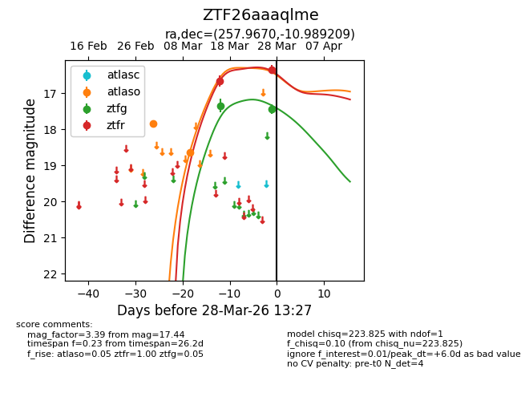
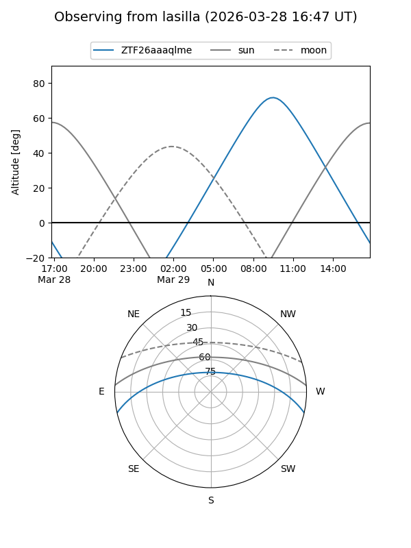
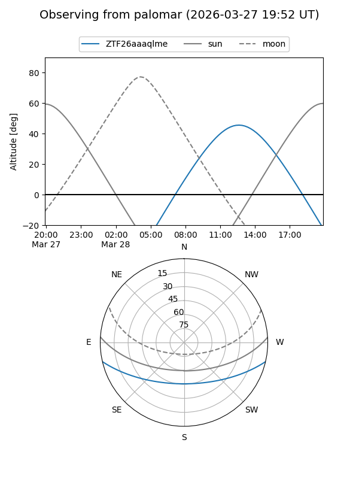
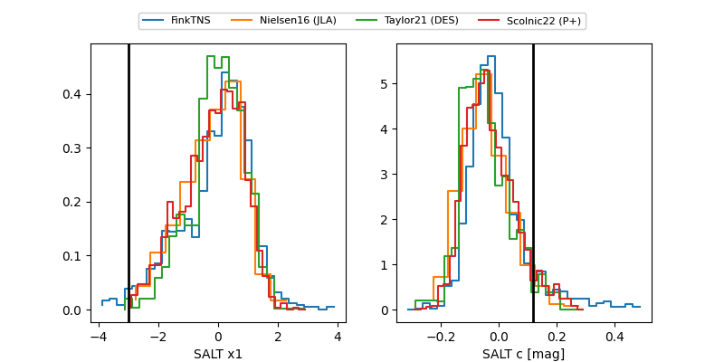

ZTF26aaaqlme
Target ZTF26aaaqlme at 2026-03-28 13:30
Aliases and brokers:
FINK: link
Lasair: link
ALeRCE: link
alt names
ZTF26aaaqlme (ztf,fink_ztf)
Coordinates:
equatorial (ra, dec) = 257.9670,-10.98921
equatorial (HMS+DMS) = 17:11:52.08,-10:59:21.15
galactic (l, b) = (11.0264,+16.30915)
Flags:
Photometry:
last atlaso=18.65, ztfg=17.44, ztfr=16.34
2 atlaso, 2 ztfg, 2 ztfr detections
Lightcurve

Visibility


Additional plots
